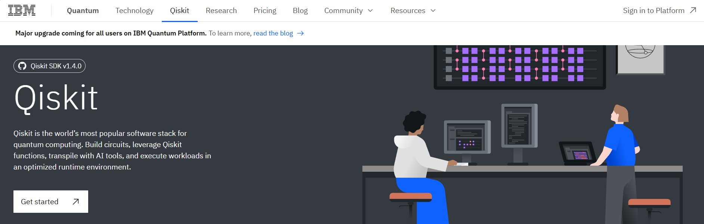

Chapter 5 Quantum Computing with Qiskit

Qiskit is an open-source SDK for working with quantum computers at the level of extended quantum circuits, operators, and primitives.
You can find more details in the following PDF file:

Quantum Circuit Example
Installing Qiskit and Required Packages
Install Qiskit with Visualization Capabilities
# Uncomment and run the following line to install Qiskit with visualization capabilities
# !pip install qiskit[visualization]Check Qiskit Version
## Qiskit version: 1.4.1Install Additional Required Packages
# Uncomment the following lines to install other required packages
# %pip install qiskit_aer
# %pip install qiskit_ibm_runtime
# %pip install matplotlib
# %pip install qiskit-transpiler-serviceSetting Up the IBM Quantum Environment
Create an account on IBM Quantum and retrieve your API token.

Configuring the Environment
from qiskit_ibm_runtime import QiskitRuntimeService
# Initialize the service with your IBM Quantum token
#service = QiskitRuntimeService(
# channel="ibm_quantum",
# token="YourActualTokenHere" # Replace with your actual token
#)
service = QiskitRuntimeService(channel="ibm_quantum",token = "33e6d21f4cc3ec730b896fc9aa77138a84bb48ed8bc6d24eff8bcbfffabd472e2869fce68f46978880d8ecf738531c002ce81809b9cf1ffd8995b00e0f9b24d0")
# Access a specific backend
backend = service.backend(name='ibm_brisbane')
print(f"Backend name: {backend.name}")## Backend name: ibm_brisbane## Number of qubits: 127#Importing QuantumCircuit from qiskit
from qiskit import QuantumCircuit
# Setting the number of qubits
qc=QuantumCircuit(2)
# Importing necessary packages to simulate results
# Designing the circuit by adding Gates and Measurements
qc.h(0)## <qiskit.circuit.instructionset.InstructionSet object at 0x000001D67F8DDED0>## <qiskit.circuit.instructionset.InstructionSet object at 0x000001D6810512D0>
from qiskit import transpile
from qiskit_aer import AerSimulator
backend = AerSimulator()
transpiled_qc = transpile(qc, backend)
job = backend.run(transpiled_qc, shots=100) # Shots: Numbers of times the algorithm is run and measured
counts = job.result().get_counts()
print(counts)## {'11': 51, '00': 49}
# Plotting the results from the simulations
from qiskit.visualization import plot_histogram
plot_histogram(counts)
Let’s try to make this in qiskit.
::: {.example #unnamed-chunk-18}
 :::
:::
## <qiskit.circuit.instructionset.InstructionSet object at 0x000001D6811FD030>## <qiskit.circuit.instructionset.InstructionSet object at 0x000001D6815EE770>## <qiskit.circuit.instructionset.InstructionSet object at 0x000001D682158EE0>## <qiskit.circuit.instructionset.InstructionSet object at 0x000001D6815D75E0>
# Importing necessary packages to simulate results
from qiskit import transpile
from qiskit_aer import AerSimulator
backend = AerSimulator()
transpiled_qc2 = transpile(qc2, backend)
job = backend.run(transpiled_qc2, shots=100) # Shots: Numbers of times the algorithm is run and measured
counts = job.result().get_counts()
print(counts)## {'00': 100}
Example 5.1 
## <qiskit.circuit.instructionset.InstructionSet object at 0x000001D68160C730>## <qiskit.circuit.instructionset.InstructionSet object at 0x000001D681608430>## <qiskit.circuit.instructionset.InstructionSet object at 0x000001D68107CA90>## <qiskit.circuit.instructionset.InstructionSet object at 0x000001D6815E6EF0>
# Importing necessary packages to simulate results
from qiskit import transpile
from qiskit_aer import AerSimulator
backend = AerSimulator()
transpiled_qc3 = transpile(qc3, backend)
job = backend.run(transpiled_qc3, shots=100) # Shots: Numbers of times the algorithm is run and measured
counts = job.result().get_counts()
print(counts)## {'00': 100}